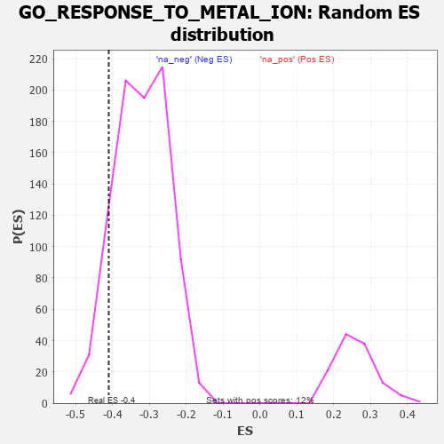

| | | Dataset | 7d |
| Phenotype | NoPhenotypeAvailable |
| Upregulated in class | na_neg |
| GeneSet | GO_RESPONSE_TO_METAL_ION |
| Enrichment Score (ES) | -0.41080078 |
| Normalized Enrichment Score (NES) | -1.2783116 |
| Nominal p-value | 0.11047836 |
| FDR q-value | 0.4985014 |
| FWER p-Value | 1.0 |
Table: GSEA Results Summary
 Fig 1: Enrichment plot: GO_RESPONSE_TO_METAL_ION
Fig 1: Enrichment plot: GO_RESPONSE_TO_METAL_ION
Profile of the Running ES Score & Positions of GeneSet Members on the Rank Ordered List
| PROBE | GENE SYMBOL | GENE_TITLE | RANK IN GENE LIST | RANK METRIC SCORE | RUNNING ES | CORE ENRICHMENT | | 1 | SYT2 | | | 8 | 5.577 | 0.1091 | No |
| 2 | ADCY8 | | | 124 | 1.418 | 0.1225 | No |
| 3 | GSK3A | | | 351 | 0.745 | 0.1086 | No |
| 4 | ERCC1 | | | 453 | 0.660 | 0.1089 | No |
| 5 | CCNB1 | | | 581 | 0.601 | 0.1047 | No |
| 6 | AKT1 | | | 1040 | 0.476 | 0.0560 | No |
| 7 | MEF2C | | | 1054 | 0.473 | 0.0638 | No |
| 8 | CDK4 | | | 1626 | 0.370 | -0.0013 | No |
| 9 | BACE1 | | | 1673 | 0.360 | 0.0000 | No |
| 10 | ALG2 | | | 1794 | 0.339 | -0.0085 | No |
| 11 | GLRA2 | | | 1892 | 0.321 | -0.0144 | No |
| 12 | KCNC2 | | | 2075 | 0.295 | -0.0316 | No |
| 13 | CUTA | | | 2181 | 0.279 | -0.0394 | No |
| 14 | CREB1 | | | 2243 | 0.269 | -0.0418 | No |
| 15 | AQP3 | | | 2796 | 0.184 | -0.1081 | No |
| 16 | TIGAR | | | 3091 | 0.138 | -0.1426 | No |
| 17 | SYT8 | | | 3115 | 0.135 | -0.1429 | No |
| 18 | OGG1 | | | 3135 | 0.132 | -0.1427 | No |
| 19 | MAPK3 | | | 3589 | 0.062 | -0.1988 | No |
| 20 | HSF1 | | | 3718 | 0.039 | -0.2143 | No |
| 21 | DAXX | | | 3722 | 0.038 | -0.2139 | No |
| 22 | SYT11 | | | 3732 | 0.036 | -0.2143 | No |
| 23 | GLRA1 | | | 3957 | 0.001 | -0.2426 | No |
| 24 | PARP1 | | | 4014 | -0.010 | -0.2495 | No |
| 25 | NFYA | | | 4140 | -0.031 | -0.2647 | No |
| 26 | SYT12 | | | 4172 | -0.037 | -0.2679 | No |
| 27 | PDX1 | | | 4179 | -0.038 | -0.2679 | No |
| 28 | SYT17 | | | 4310 | -0.061 | -0.2832 | No |
| 29 | NDRG1 | | | 4456 | -0.085 | -0.2999 | No |
| 30 | LRRK2 | | | 4467 | -0.087 | -0.2994 | No |
| 31 | MEF2A | | | 4499 | -0.095 | -0.3015 | No |
| 32 | SYT4 | | | 4590 | -0.116 | -0.3106 | No |
| 33 | TERT | | | 4801 | -0.157 | -0.3341 | No |
| 34 | P2RX4 | | | 4813 | -0.161 | -0.3323 | No |
| 35 | AOC1 | | | 4993 | -0.197 | -0.3511 | No |
| 36 | DRD2 | | | 5088 | -0.221 | -0.3586 | No |
| 37 | MMP9 | | | 5108 | -0.227 | -0.3565 | No |
| 38 | PTEN | | | 5262 | -0.261 | -0.3707 | No |
| 39 | CDK1 | | | 5264 | -0.262 | -0.3657 | No |
| 40 | ITPR3 | | | 5361 | -0.288 | -0.3721 | No |
| 41 | CPNE9 | | | 5374 | -0.289 | -0.3680 | No |
| 42 | DLG4 | | | 5388 | -0.293 | -0.3638 | No |
| 43 | FABP4 | | | 5509 | -0.322 | -0.3727 | No |
| 44 | G6PD | | | 5638 | -0.358 | -0.3818 | No |
| 45 | CASP8 | | | 5678 | -0.369 | -0.3794 | No |
| 46 | ANXA7 | | | 5827 | -0.413 | -0.3900 | No |
| 47 | SYT9 | | | 5992 | -0.469 | -0.4015 | Yes |
| 48 | HVCN1 | | | 6034 | -0.482 | -0.3972 | Yes |
| 49 | TRPC3 | | | 6035 | -0.483 | -0.3877 | Yes |
| 50 | CALR | | | 6077 | -0.499 | -0.3830 | Yes |
| 51 | DLG2 | | | 6126 | -0.513 | -0.3790 | Yes |
| 52 | STIM1 | | | 6169 | -0.528 | -0.3739 | Yes |
| 53 | ATP7B | | | 6194 | -0.535 | -0.3663 | Yes |
| 54 | NPC1 | | | 6364 | -0.602 | -0.3759 | Yes |
| 55 | CPNE2 | | | 6417 | -0.627 | -0.3701 | Yes |
| 56 | SYT15 | | | 6472 | -0.650 | -0.3641 | Yes |
| 57 | CPNE8 | | | 6538 | -0.680 | -0.3589 | Yes |
| 58 | EGFR | | | 6708 | -0.765 | -0.3652 | Yes |
| 59 | ADAM9 | | | 6808 | -0.819 | -0.3615 | Yes |
| 60 | CPNE5 | | | 7070 | -0.977 | -0.3753 | Yes |
| 61 | SYT1 | | | 7148 | -1.033 | -0.3647 | Yes |
| 62 | TSPO | | | 7194 | -1.065 | -0.3493 | Yes |
| 63 | LOXL2 | | | 7403 | -1.269 | -0.3506 | Yes |
| 64 | OTC | | | 7430 | -1.305 | -0.3281 | Yes |
| 65 | CNGA3 | | | 7463 | -1.353 | -0.3055 | Yes |
| 66 | CALM1 | | | 7567 | -1.499 | -0.2889 | Yes |
| 67 | TRPV6 | | | 7569 | -1.502 | -0.2594 | Yes |
| 68 | PDCD6 | | | 7630 | -1.615 | -0.2351 | Yes |
| 69 | TRPM2 | | | 7680 | -1.712 | -0.2075 | Yes |
| 70 | ANK3 | | | 7690 | -1.740 | -0.1743 | Yes |
| 71 | ADCY1 | | | 7695 | -1.752 | -0.1402 | Yes |
| 72 | CASP3 | | | 7747 | -1.902 | -0.1091 | Yes |
| 73 | PKD2 | | | 7822 | -2.167 | -0.0757 | Yes |
| 74 | KCNC1 | | | 7835 | -2.249 | -0.0328 | Yes |
| 75 | CALM3 | | | 7869 | -2.525 | 0.0129 | Yes |
Table: GSEA details [plain text format]

Fig 2: GO_RESPONSE_TO_METAL_ION: Random ES distribution
Gene set null distribution of ES for GO_RESPONSE_TO_METAL_ION